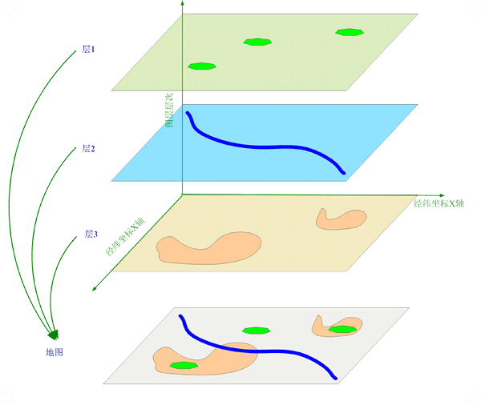
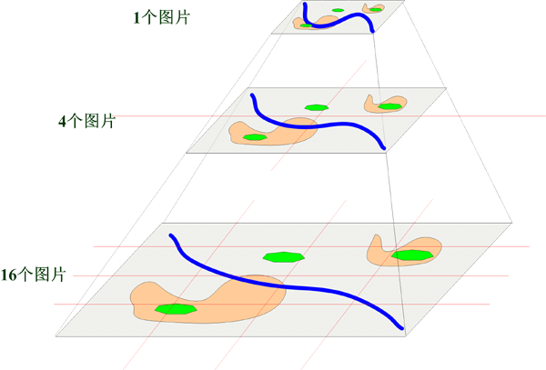

PGIS栅格地图图片服务 |
|
浏览导航服务功能简介 服务功能定义 运行环境说明 服务器配置 服务接口地址 服务测试页面 |
浏览内容服务功能详述
栅格地图图片服务，是一种地图底图服务，用于向客户端传送静态的，或者不经常变化的地图栅格数据，这些数据，是经过图片生成工具，从矢量图象，遥感影像等图像经加工而成的，以不同分辨率存储的海量栅格地图，一般数据量比较大，图片服务以及其融合服务就是为快速定位和显示这些图片而产生的服务。 地图的结构
一幅真实的地图，一般含多个层，每一层是一个二维平面图。层与层之间，一般以覆盖方式叠加，即，如果上层图层存在图像，那么下层的图象不会显示。 当然也可以使用其它图像叠加方法，比如混合，溶解，线性加深，强光，柔光等基本的图层融合方式。 以下是一个矢量地图的图层实例：  地图服务提供的多个地图数据源，也以这种图层形式进行组织，上层的图层如果存在数据，会覆盖或者合并到下层的图层。服务器的图层源，是一种栅格数据源，其在没有数据的情况下，会返回空白图片，因此，使用多个图层源，需要预先设定好图层的范围，这样在上层图层没有数据的情况下，不会使用空白图片覆盖下层的图片。 地图的分割
栅格数据不同于矢量数据，它是由信息损失的，因此，对于一个地图，在不同的分辨率去观察，得到的结果其实是不相同的，将人眼无法分辨或者可以忍受的情况下，是可以对图片的渲染精度进行控制的，在小比例尺上对矢量图采用较低的精度获取数据并渲染（数据抽稀），而在大比例尺上，采用较高的精度获取数据并渲染，这种方式被形象地称为“金字塔”。 金字塔图像快照，对同一幅地图，在小比例尺下，用较少的图片存放快照，在较大比例尺下，用较多的图片存放快照。对于不同的比例尺，服务使用 ZOOM 的概念描述，即缩放等级，一般等级为-3 到 16 级，其中 X 级比 X-1 级的内容细化 2 倍，即用 4 个 X 级的图片所表示的内容，相当于一个 X-1 级同位置的图片的内容，只不过他们的分辨率不一样。 如下图所示：  矢量地图被按照预先设定的等级切割，变成栅格图像。 由于需求不同，因此切割是，切割的图片输出等级是可以根据需要设置的。图像源包含的图片，不一定含有所有等级的图片，并且，不同等级的图片，可能也是有不同来源的矢量数据或者栅格数据加工而成的，因此，每个数据源，需要指定其包含有图片的等级，只有在其有效的等级里，这个图片源才是有效的，否则相当于没有数据。 多个地图的混合
图片服务，本身由多个图层源，进行有机的组织和重新发布，服务本身也可以当作其他图片服务的数据源使用。因此从这个结构层次讲，它形成了一个分布式的，多源混合的栅格服务。地图服务图片源，是从一个由地图产生的金字塔切片，而非一个图层建立金字塔形成，因此，多个图片源的混合，有可能是多个地图数据的光栅叠加，其结果可能得到冗余的信息，和矛盾的数据显示配置结果。 图片融合服务，按照图片服务的空间区域，图像金字塔缩放等级，以及在整个混合地图中的层级，这三个参数，按照配置文件中设定的混合方式，对地图图像进行重整输出。 其输出主要采取以下策略：
|